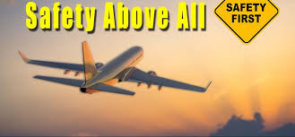

safety
- Aviation safety is the study and practice of managing risks in aviation. This includes preventing aviation accidents and incidents through research, educating air travel personnel, passengers and the general public, as well as the design of aircraft and aviation infrastructure. The aviation industry is subject to significant regulations and oversight.
-
Air travel is statistically very safe, becoming even safer over time. While the dramatic nature of plane crashes can cause fear, the reality is that the odds of dying in a plane crash are extremely low, and much lower than other common causes of death. Modern technology, improved regulations, and rigorous training for flight crews and air traffic controllers have all contributed to this increased safety.
- How to be safe on an airplane?
Safety Information | In-Flight | Travel Information | ANA
Be sure to watch the video about emergency equipment and read the safety instructions card before takeoff. Return your seat and table to their original positions during takeoff and landing. Smoking* and the use of fire is strictly prohibited throughout the cabin, including the lavatories.
- Here are the top 10 safest full-service airlines for 2025:
The ones following the top 10 are: TAP Portugal, Hawaiian Airlines, American Airlines, SAS, British Airways, Iberia, Finnair, Lufthansa/Swiss, JAL, Air Canada, Delta Airlines, Vietnam Airlines and United Airlines.
- The Safest Major Airlines
According to AirlineRatings.com, the safest airline for 2025 is Air New Zealand, which also won in 2024 and 2022. “Air New Zealand boasts an outstanding safety record, with no serious incidents or crashes in the modern jet era,” AirlineRatings.com CEO Sharon Petersen told me in an interview.

.jpeg)
.jpeg)
.jpeg)